|
|
T-DEC/102 is a simulated computer project. T-DEC stands for Turing-Digital Electronic Computer. I selected this name in memory of Alan Turing, the father of computer science and artificial intelligence. The number 102 is the result of subtracting 1912 (the year when Alan Turing was born) from 2014 (the year when this project was done).
T-DEC/102 was built with TTL chips on Proteus. I chose TTL to have the feeling that people who designed DEC VAX and such systems had :D As you can see, it is a simulated machine; I used Proteus to design and simulate T-DEC.
The project was finished in March 2014, just before my forth semester in CSED started.
T-DEC/102 consists of the following components:
The processor, which has eight 8-bit registers (named R0-->R7), a 16-bit address bus, an 8-bit data bus, an 8-function 8-bit ALU, and a microprogrammed control unit. The microprogram consists of 128 micro-operations. A micro-assembler was written in C to compile the microcode.
2KB SRAM.
3-to-8 address decoder.
Two 8255 Programmable Peripheral Interface (PPI) chips to interface a keypad and 8 seven-segment LEDs.
The operating system, which was written in T-DEC/102 assembly language, and was installed on a ROM chip. An assembler was written in C to compile the OS. The OS contains a calculator program, which takes inputs from the keypad, and outputs results to the seven-segment LEDs. It also contains device drivers for the PPIs, the keypad, and the seven-segment LEDs.
The first step in the project was to design the macro architecture. T-DEC would be mainly used for doing math (ADD, SUB, etc...). I tried to reduce the ISA as much as I could in order to minimize TTL logic.
In the final design, I came up with 10 different instruction formats:
| Instruction Class | Addressing Mode |
BYTE0 | BYTE1 | BYTE2 |
|---|---|---|---|---|
| Branch Instructions | Absolute |
Bits 5-0: CONDCODE Bits 7-6: 00 |
Address Low | Address High |
| Register Indirect |
Bits 5-0: CONDCODE Bits 7-6: 01 |
Bits 3-0: REG1 Bits 7-4: REG2 |
- | |
| Load Instructions | Immediate |
Bits 3-0: REG Bits 7-4: 1000 |
VAL | - |
| Absolute |
Bits 3-0: REG Bits 7-4: 1001 |
Address Low | Address High | |
| Register Indirect |
Bits 3-0: REG Bits 7-4: 1010 |
Bits 3-0: REG1 Bits 7-4: REG2 |
- | |
| Store Instructions | Absolute |
Bits 3-0: REG Bits 7-4: 1011 |
Address Low | Address High |
| Register Indirect |
Bits 3-0: REG Bits 7-4: 1100 |
Bits 3-0: REG1 Bits 7-4: REG2 |
- | |
| Reg-Reg Transfer Instructions | Register Direct |
Bits 3-0: 0000 Bits 7-4: 1101 |
Bits 3-0: REG1 Bits 7-4: REG2 |
- |
| ALU Instructions | Immediate |
Bits 3-0: ALUOP Bits 7-4: 1110 |
VAL | - |
| Register Direct |
Bits 3-0: ALUOP Bits 7-4: 1111 |
Bits 3-0: REG1 Bits 7-4: REG2 |
- |
As you can see, the highest 4 bits of BYTE0 can be used to identify the instruction format and decode the instruction. For example, if they are 01xx, then it is obviously a branch instruction in register-indirect addressing mode. On the other hands, It is a store instruction in absolute addressing mode if the bits are 1011.
T-DEC/102 is little endian. Thus BYTE0 is fetched before BYTE1 and BYTE2. ALUOP is signaled to the ALU unit during the execution phase of ALU instructions. It simply indicates which ALU operation should be activated. CONCODE indicates the conditions that must be met so that the branch instruction modifies the value of PC.
The second step of the project was to implement the ISA using TTL chips. I started with the architectural register file, which looked like this in the final design:
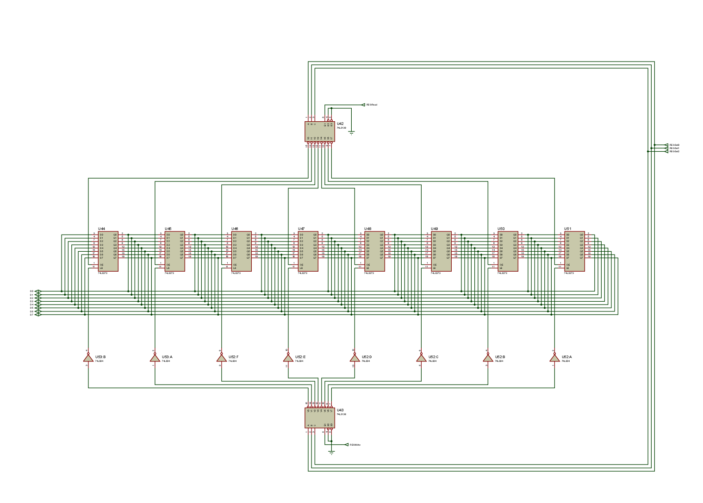
R0-->R7 (click on the image for full size)
I then designed the data path of the processor, and the internal registers (IR, MAR, Flags, ...)
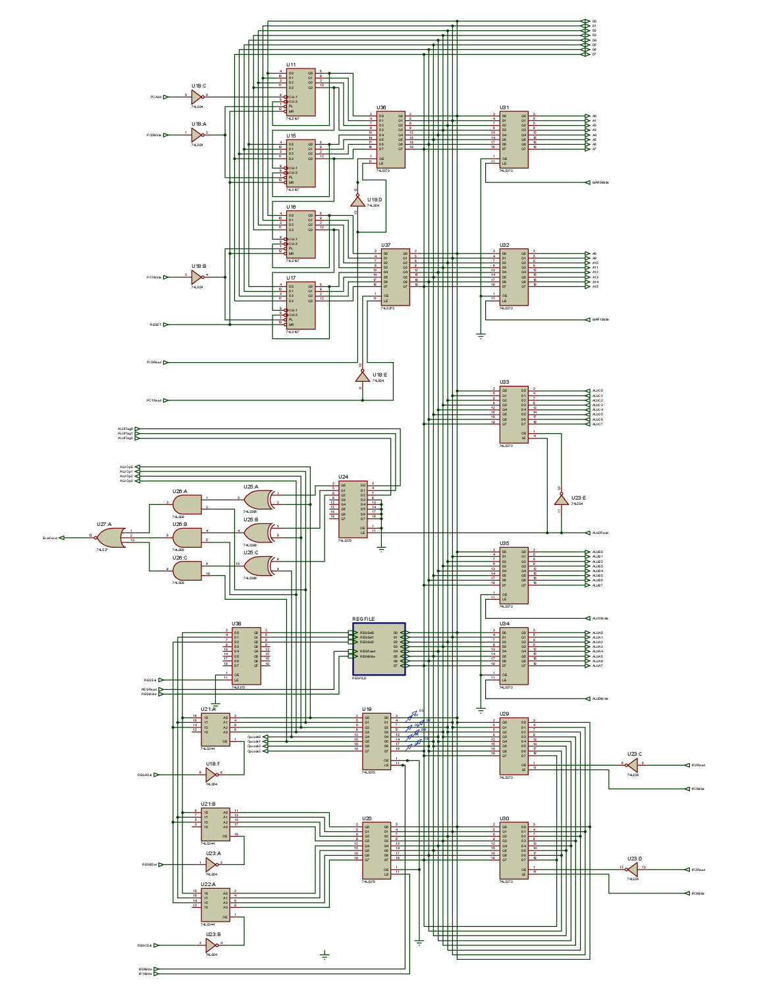
Internal registers and datapath (click on the image for full size)
Most registers have READ signals and WRITE signals attached to OE and LE pins. READ signal allows the register to put its data on the data bus (when READ is off, the LS373 latches are in tri-state). WRITE signal allows the register to latch the data on the data bus. All these signals are connected to the control unit which controls them.
The ALU is pretty simple and doesn't need much explanation:
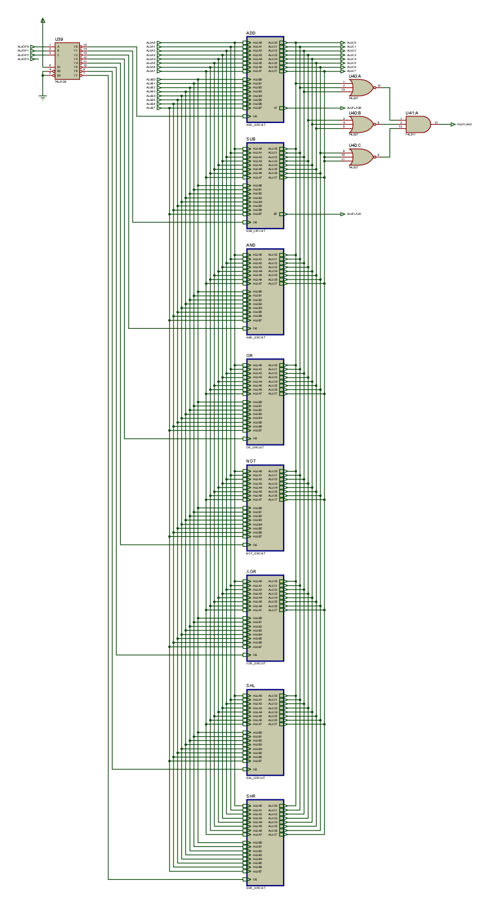
Arithmetic/Logic Unit (click on the image for full size)
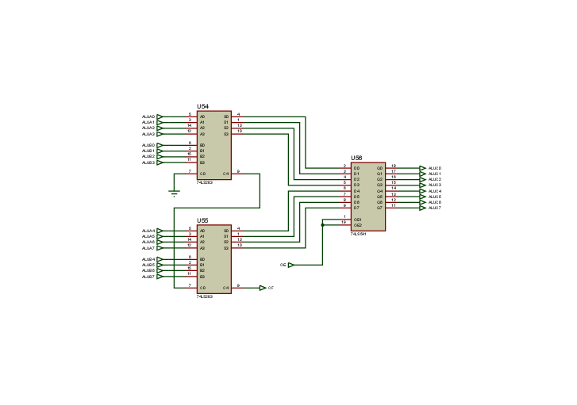
ADD circuit (click on the image for full size)
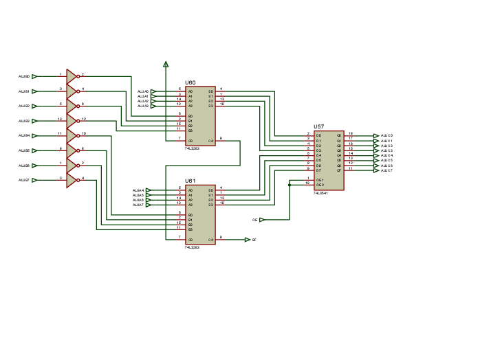
SUB circuit (click on the image for full size)
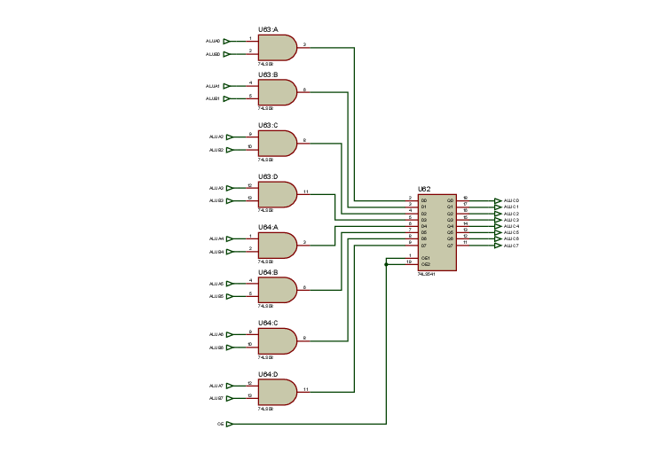
AND circuit (click on the image for full size)
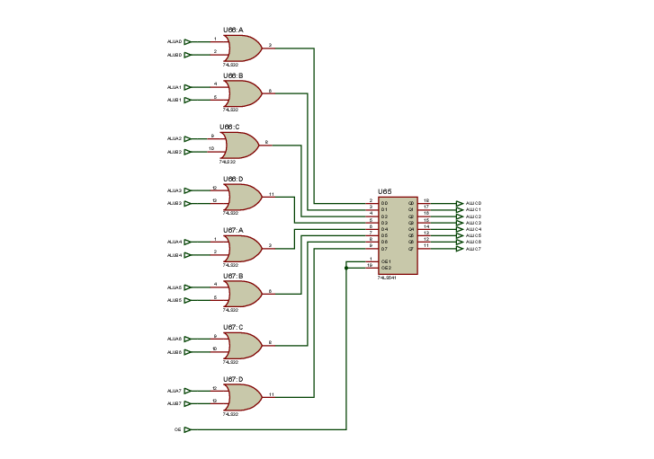
OR circuit (click on the image for full size)
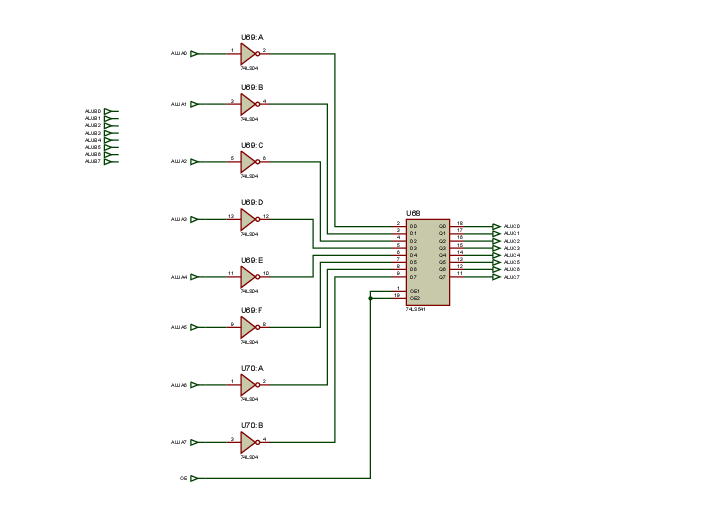
NOT circuit (click on the image for full size)
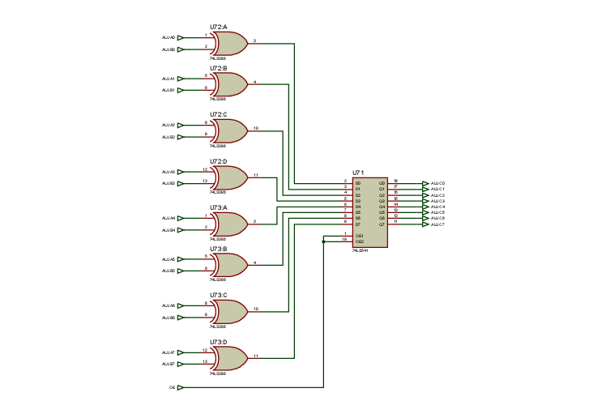
XOR circuit (click on the image for full size)
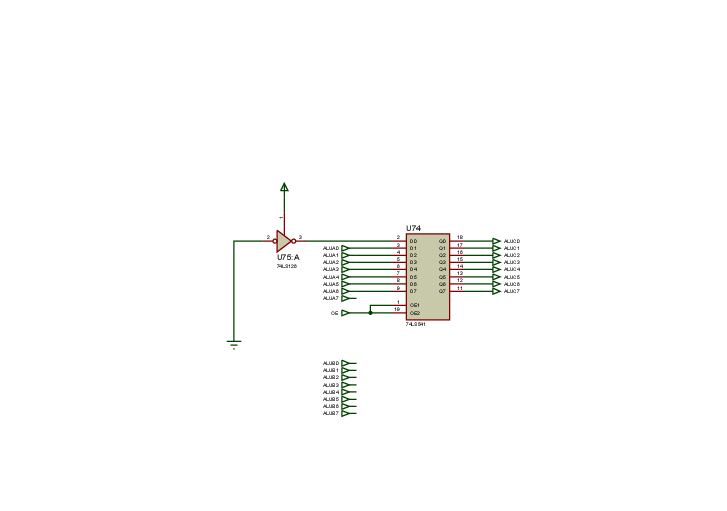
SHL circuit (click on the image for full size)
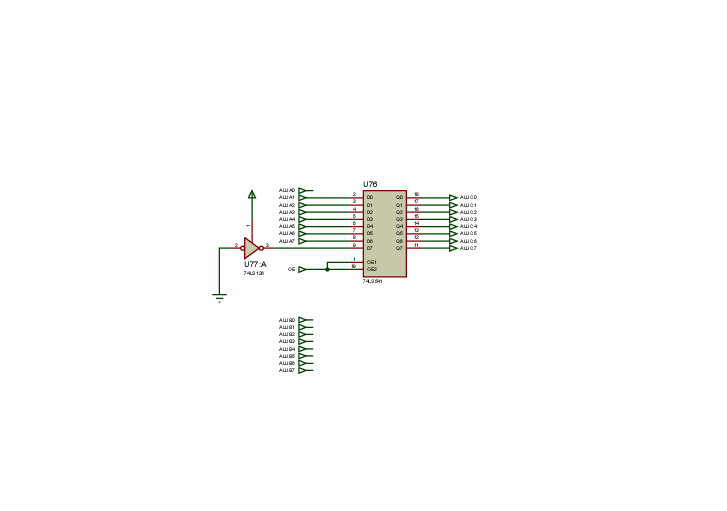
SHR circuit (click on the image for full size)
The control unit was very challenging to me because it was my first time to do such thing. The control unit consists of 4 ROMs, 3 latches (to treat the ROM glitches), and a sequencer. The ROMs store the microprogram which is explained below. The outputs of the ROM are the control signals of current micro-operation. The fetched opcode and the flags state are signaled to the control unit as input as they control the flow of the micropogram.
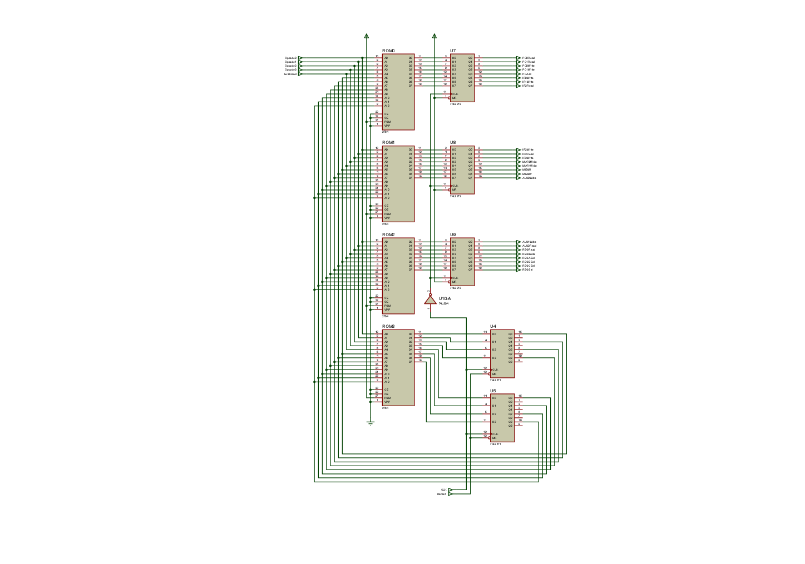
Microprogrammed control unit (click on the image for full size)
Obviously, The CPU consited of the control unit, the ALU, and the registers:
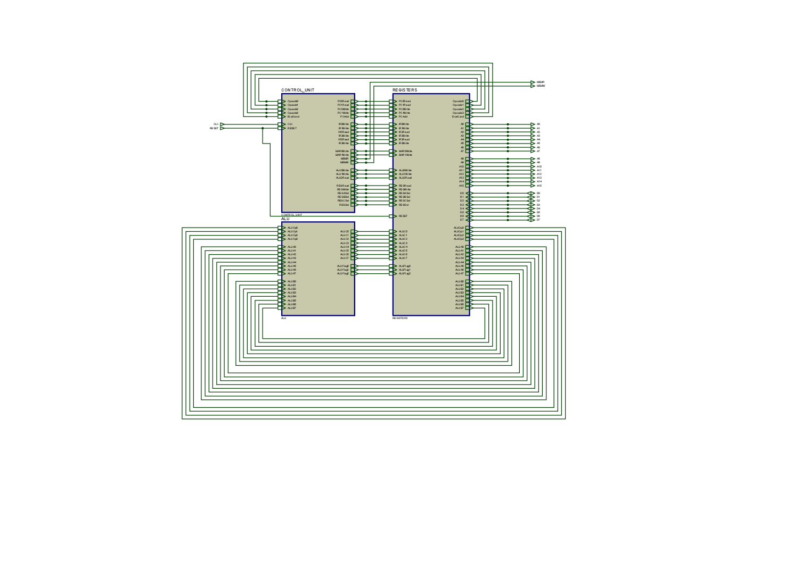
T-DEC CPU (click on the image for full size)
As explained above, T-DEC/102 consisted of the CPU, an SRAM, the firmware ROM, two PPIs, keypad, and 8 seven-segment LEDs. This is the top-level schematic of the machine:
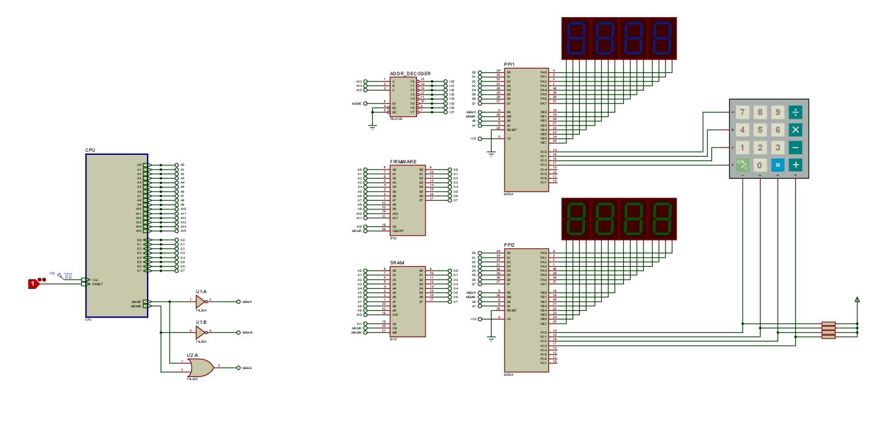
T-DEC top-level schematic (click on the image for full size)
The microprogramming part was very interesting. In order to write the microprogram, I had to create the RTL language in which the microprogram would be written. I came up with a pretty simple grammar. Register transfers are written like this:
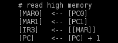
As example, the first line means that MAR0Write and PC0Read signals will be on when this micro-operation is selected by the sequencer. To describe the branches that occur inside the microprogram, I created this simple syntax:
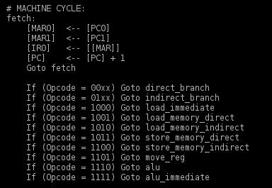
I decided to give If statements a higher priority over Goto statements if "If" follows "Goto". Therefore "Goto fetch" will never occur unless if all the immediately-following "If" statements don't meet the conditions. Confusing, right? I just wanted to simplify the code that will translate this microprogram into zeros and ones :D
Labels should appear at separate lines. A label must be followed by a colon. Comments start with hashes:
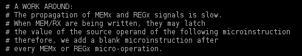
I ended up with 128 micro-operations. I wrote a simple micro-assembler in C to translate the microprogram into binary. The microassembler works in two passes to solve the forward references. I then configured Proteus to load the compiled microcode onto the four ROMs. Of course, things didn't work out of the blue. There was a lot of debugging on all levels: the hardware logic, the microprogram, the microassembler, the assembler, and the OS.
T-DEC/102 assembly is pretty easy. All instructions have two operands and are written in this form: "MNEMONIC OPERAND1, OPERAND2". ADD, SUB, MOV, and JZ (Jump if zero flag on) are examples for valid mnemonics. Each operand maybe an immediate, a register, a memory address, a label, or two registers used as memory address (MOV R0, [R1:R2] ; Address stored in both R1 and R2).
To achieve flexible, the programmer doesn't have to care about the details of ISA (like instruction classes). MOV R6, R7 and MOV R6, [0x100] may seem to you as if they are the same instruction with different addressing modes. But actually, they are totally different instructions (see the instruction set architecture section above). The assembler identifies the instruction class using a lookup table:
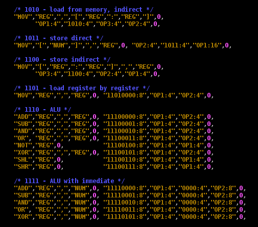
The assembler is used to compile the OS. It generates a binary file that contains a T-DEC/102 executable program which is to be loaded on the firmware ROM. When T-DEC/102 is powered on, it fetches and executes the instructions from the firmware ROM through the external system bus.
This is the highest level of the project. The firmware ROM appears at 0x0000 memory address, so I adjusted the OS to that region. When T-DEC is powered on, PC is 0x0000. The OS bootloader is automatically executed and it goes into the following sequence:
Initialize R0-->R5 registers with zeros.
R6 and R7 are used as a stack pointer for the call stack of the operating system. I give them an initial value.
Initialize the PPIs. CALL() is a macro that pushes current PC to the stack and then jumps to the desired routine. I used the awsome GNU M4 macroprocessor for manipulating these macros.
Two 32-bit words of the SRAM are called "accumulator", and "operand". They are used by the calculator program. The OS initializes them to zero.
The OS then updates the seven-sgement LEDs so that the accumulator and the operand are shown on them.
The calculator is finally executed and it takes control. It keeps reading the inputs from the keyboard driver and appends it to "operand". When "+" or "-" is hit, the operand is added to/subtracted from the accumulator. When "=" is pressed, the operand is copied to the accumulator. The calculator keeps updating the LEDs on every key press.
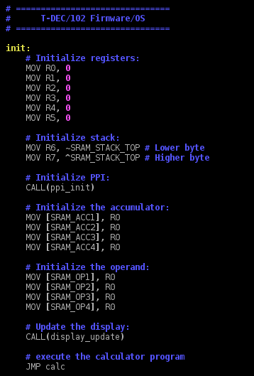
Initialization sequence.
It was exciting to see my assembly code assembled by an assembler of my own, and executed by a machine of my design :) The experience made me aware of a lot of technical details about what happens inside the computer. It shows you how hardware and software interact together and how they cooperate.
Here is a screenshot of a sample run. The number in blue is actually the accumulator. The other number is the operand. The calculator program is running and waiting for a key press.
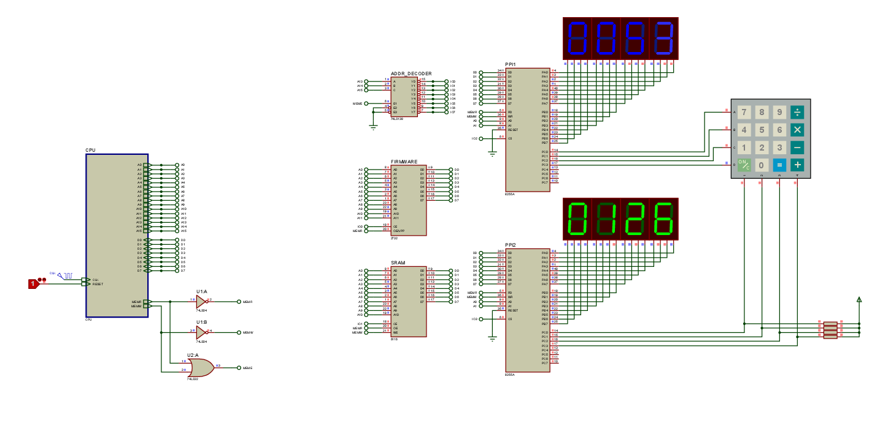
Sample run (click on the image for full size)
{kind=link}
{kind=link}
{kind=link}
{kind=link}
{kind=link}
{kind=link}
{kind=link}
{kind=link}
{kind=link}
{kind=link}
{kind=link}
{kind=link}
{kind=link}
{kind=link}
{kind=link}